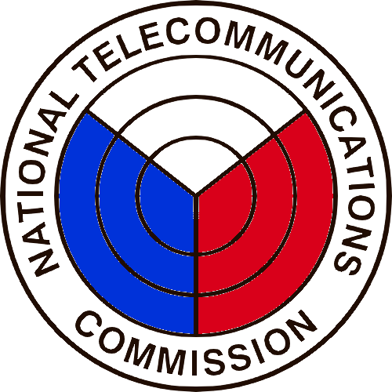

NTC
Select a document to view details
Fields marked * are required
Confirm timestamp
Record timestamp and outcome
Record receipt and outcome (CDO II)
Review before sending
This will remove the timestamp and reset the stage to unstamped
Enter PIN to confirm deletion
Stage-by-stage breakdown & statistics
Appearance preferences